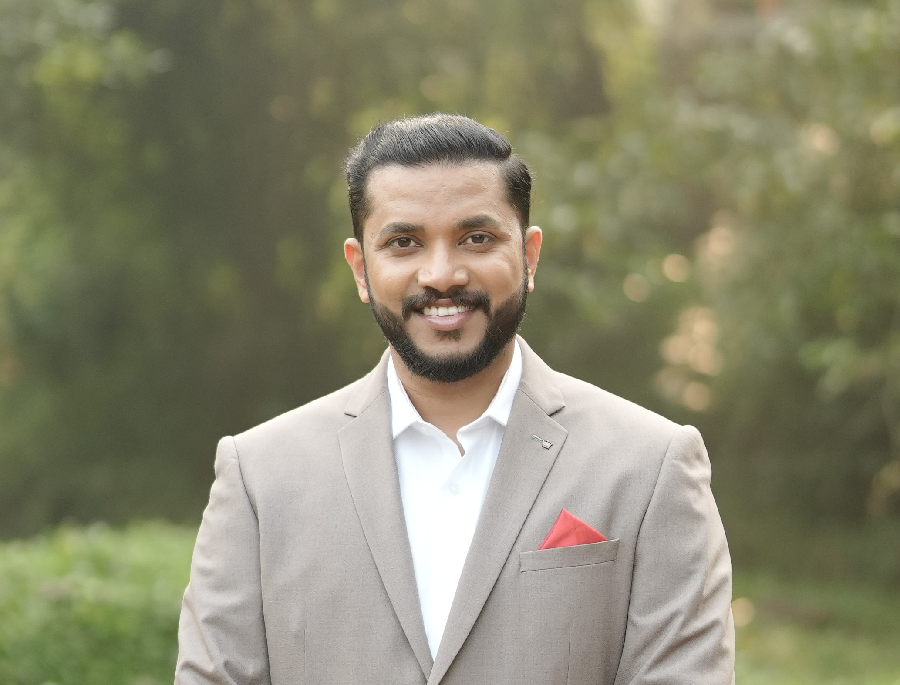

Hi, I'm Ebin Kuriakose
Mechanical Engineer | Production Operations | Lean Manufacturing
Mechanical engineer with five years of experience in manufacturing production, process improvement, and quality and safety compliance. I apply Lean principles and standardized procedures to improve efficiency, reduce cost, and support daily production targets.
View My Projects View ResumeAbout Me
I have a Master's in Engineering Management from the University of Chester, UK, and a Bachelor's in Mechanical Engineering from Christ University, Bangalore. My work has covered production planning support, time studies, equipment testing, preventive maintenance, and safety audits across manufacturing and warehouse environments.
I train and coach teams to build their skills, and I enjoy finding bottlenecks and turning them into practical improvements. I am currently seeking a production role where I can support daily operations, process improvement, and production targets. I am also completing my registration with the Saudi Council of Engineers (SCE). Moreover I hold a valid Saudi driving licence and a transferable Iqama, allowing me to join immediately.
Featured Projects
Cost-Saving Benefits of adopting Industrial IoT (IIoT) Architecture.
Researched how adopting Industrial Internet of Things (IIoT) architecture can optimise energy use and reduce unplanned downtime in manufacturing, using BMW’s (2019–2022) sustainability and financial data as a case study. And I found that IIoT lowered BMW’s operational costs, reduced its energy consumption and carbon emissions each year, and increased its profitability and ability to meet customer needs.
Production Efficiency Improvements
Used time studies and production data to find bottlenecks, improving overall output by 20% and cutting equipment setup time by 15%.
Working Model: Single Occupancy Vehicle
Designed and Manufactured a working model of single occupancy vehicle as part of final year project.
Get In Touch
I am open to production, operations, and process improvement roles in Saudi Arabia.
Email: ebinkuriakose3366@gmail.com
Phone: +966 53 893 2579
Location: Al Khobar, Eastern Province, Saudi Arabia